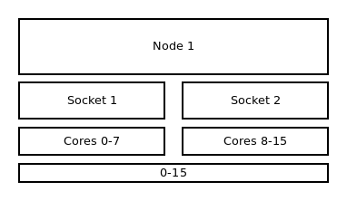
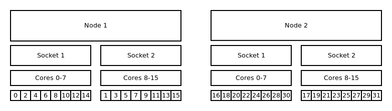
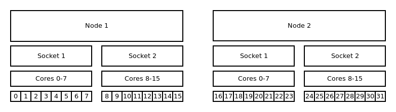
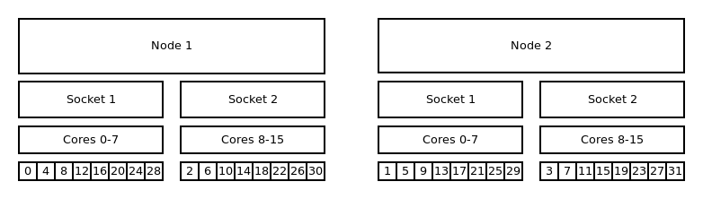
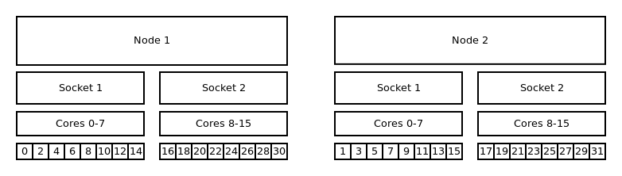
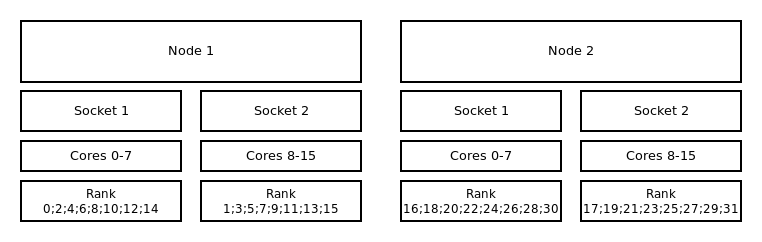
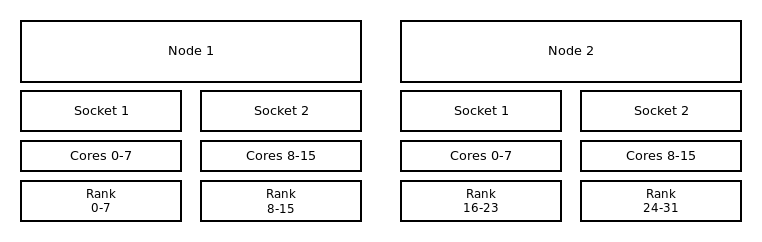
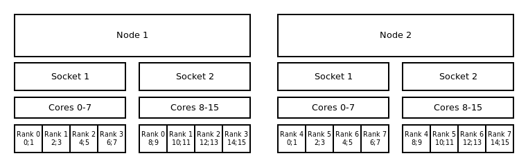
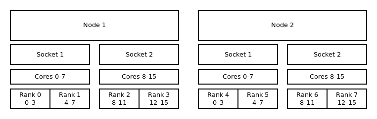
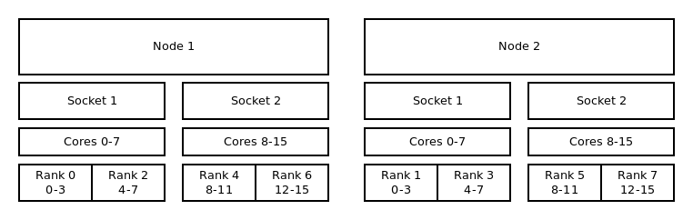

Binding and Distribution of Tasks#
Slurm provides several binding strategies to place and bind the tasks and/or threads of your job to cores, sockets and nodes.
!!! note
Keep in mind that the distribution method might have a direct impact on the execution time of
your application. The manipulation of the distribution can either speed up or slow down your
application.
General#
To specify a pattern the commands --cpu_bind=<cores|sockets> and --distribution=<block|cyclic>
are needed. The option cpu_bind defines the resolution in which the tasks will be allocated. While
--distribution determinate the order in which the tasks will be allocated to the CPUs. Keep in
mind that the allocation pattern also depends on your specification.
!!! example “Explicitly specify binding and distribution”
```bash
#!/bin/bash
#SBATCH --nodes=2 # request 2 nodes
#SBATCH --cpus-per-task=4 # use 4 cores per task
#SBATCH --tasks-per-node=4 # allocate 4 tasks per node - 2 per socket
srun --ntasks 8 --cpus-per-task 4 --cpu_bind=cores --distribution=block:block ./application
```
In the following sections there are some selected examples of the combinations between --cpu_bind
and --distribution for different job types.
OpenMP Strategies#
The illustration below shows the default binding of a pure OpenMP job on a single node with 16 CPUs on which 16 threads are allocated.

{: align=center}!!! example “Default binding and default distribution”
```bash
#!/bin/bash
#SBATCH --nodes=1
#SBATCH --tasks-per-node=1
#SBATCH --cpus-per-task=16
export OMP_NUM_THREADS=16
srun --ntasks 1 --cpus-per-task $OMP_NUM_THREADS ./application
```
MPI Strategies#
Default Binding and Distribution Pattern#
The default binding uses --cpu_bind=cores in combination with --distribution=block:cyclic. The
default (as well as block:cyclic) allocation method will fill up one node after another, while
filling socket one and two in alternation. Resulting in only even ranks on the first socket of each
node and odd on each second socket of each node.

{: align=”center”}!!! example “Default binding and default distribution”
```bash
#!/bin/bash
#SBATCH --nodes=2
#SBATCH --tasks-per-node=16
#SBATCH --cpus-per-task=1
srun --ntasks 32 ./application
```
Core Bound#
!!! note
With this command the tasks will be bound to a core for the entire runtime of your
application.
Distribution: block:block#
This method allocates the tasks linearly to the cores.

{: align=”center”}!!! example “Binding to cores and block:block distribution”
```bash
#!/bin/bash
#SBATCH --nodes=2
#SBATCH --tasks-per-node=16
#SBATCH --cpus-per-task=1
srun --ntasks 32 --cpu_bind=cores --distribution=block:block ./application
```
Distribution: cyclic:cyclic#
--distribution=cyclic:cyclic will allocate your tasks to the cores in a
round robin approach. It starts with the first socket of the first node,
then the first socket of the second node until one task is placed on
every first socket of every node. After that it will place a task on
every second socket of every node and so on.

{: align=”center”}!!! example “Binding to cores and cyclic:cyclic distribution”
```bash
#!/bin/bash
#SBATCH --nodes=2
#SBATCH --tasks-per-node=16
#SBATCH --cpus-per-task=1
srun --ntasks 32 --cpu_bind=cores --distribution=cyclic:cyclic ./application
```
Distribution: cyclic:block#
The cyclic:block distribution will allocate the tasks of your job in alternation on node level, starting with first node filling the sockets linearly.

{: align=”center”}!!! example “Binding to cores and cyclic:block distribution”
```bash
#!/bin/bash
#SBATCH --nodes=2
#SBATCH --tasks-per-node=16
#SBATCH --cpus-per-task=1
srun --ntasks 32 --cpu_bind=cores --distribution=cyclic:block ./application
```
Socket Bound#
The general distribution onto the nodes and sockets stays the same. The mayor difference between socket- and CPU-bound lies within the ability of the OS to move tasks from one core to another inside a socket while executing the application. These jumps can slow down the execution time of your application.
Default Distribution#
The default distribution uses --cpu_bind=sockets with --distribution=block:cyclic. The default
allocation method (as well as block:cyclic) will fill up one node after another, while filling
socket one and two in alternation. Resulting in only even ranks on the first socket of each node and
odd on each second socket of each node.

{: align=”center”}!!! example “Binding to sockets and block:cyclic distribution”
```bash
#!/bin/bash
#SBATCH --nodes=2
#SBATCH --tasks-per-node=16
#SBATCH --cpus-per-task=1
srun --ntasks 32 -cpu_bind=sockets ./application
```
Distribution: block:block#
This method allocates the tasks linearly to the cores.

{: align=”center”}!!! example “Binding to sockets and block:block distribution”
```bash
#!/bin/bash
#SBATCH --nodes=2
#SBATCH --tasks-per-node=16
#SBATCH --cpus-per-task=1
srun --ntasks 32 --cpu_bind=sockets --distribution=block:block ./application
```
Distribution: block:cyclic#
The block:cyclic distribution will allocate the tasks of your job in
alternation between the first node and the second node while filling the
sockets linearly.
{: align=”center”}
!!! example “Binding to sockets and block:cyclic distribution”
```bash
#!/bin/bash
#SBATCH --nodes=2
#SBATCh --tasks-per-node=16
#SBATCH --cpus-per-task=1
srun --ntasks 32 --cpu_bind=sockets --distribution=block:cyclic ./application
```
Hybrid Strategies#
Default Binding and Distribution Pattern#
The default binding pattern of hybrid jobs will split the cores allocated to a rank between the sockets of a node. The example shows that Rank 0 has 4 cores at its disposal. Two of them on first socket inside the first node and two on the second socket inside the first node.

{: align=”center”}!!! example “Binding to sockets and block:block distribution”
```bash
#!/bin/bash
#SBATCH --nodes=2
#SBATCH --tasks-per-node=4
#SBATCH --cpus-per-task=4
export OMP_NUM_THREADS=$SLURM_CPUS_PER_TASK
srun --ntasks 8 --cpus-per-task $OMP_NUM_THREADS ./application
```
Core Bound#
Distribution: block:block#
This method allocates the tasks linearly to the cores.

{: align=”center”}!!! example “Binding to cores and block:block distribution”
```bash
#!/bin/bash
#SBATCH --nodes=2
#SBATCH --tasks-per-node=4
#SBATCH --cpus-per-task=4
export OMP_NUM_THREADS=$SLURM_CPUS_PER_TASK
srun --ntasks 8 --cpus-per-task $OMP_NUM_THREADS --cpu_bind=cores --distribution=block:block ./application
```
Distribution: cyclic:block#
The cyclic:block distribution will allocate the tasks of your job in alternation between the first
node and the second node while filling the sockets linearly.

{: align=”center”}!!! example “Binding to cores and cyclic:block distribution”
```bash
#!/bin/bash
#SBATCH --nodes=2
#SBATCH --tasks-per-node=4
#SBATCH --cpus-per-task=4
export OMP_NUM_THREADS=$SLURM_CPUS_PER_TASK
srun --ntasks 8 --cpus-per-task $OMP_NUM_THREADS --cpu_bind=cores --distribution=cyclic:block ./application
```
GPU#
Currently with the Slurm version (20.11.9) used ZIH systems it is not possible to bind tasks to GPUs. Is will be possible as soon as Slurm is updated at least to version 21.08.0 (see GRES/MIG documentation in Slurm 21.08.0).